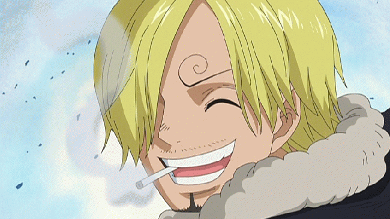
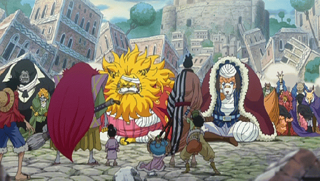
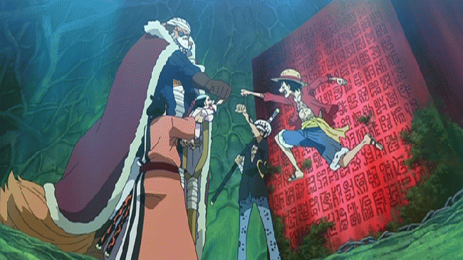
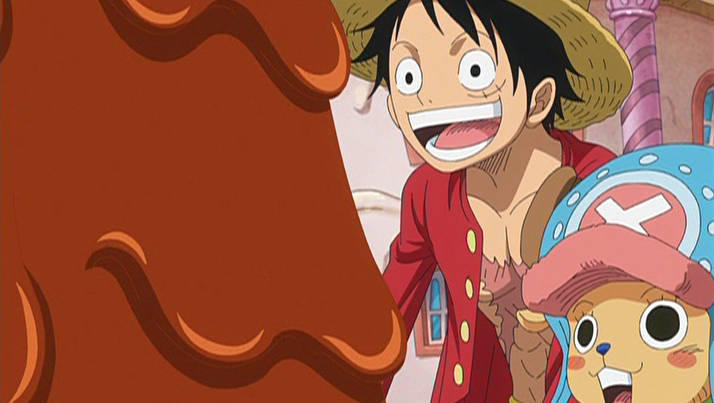
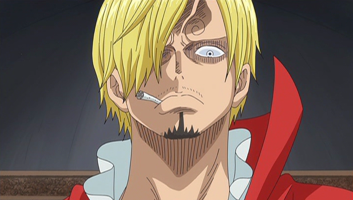
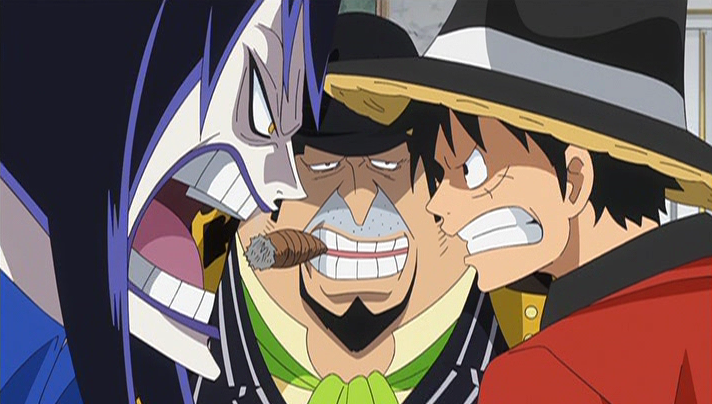
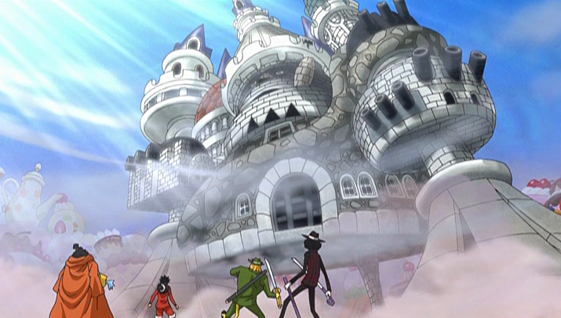
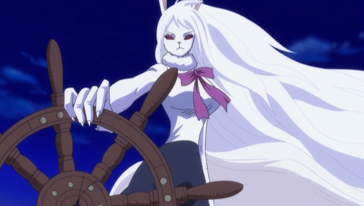
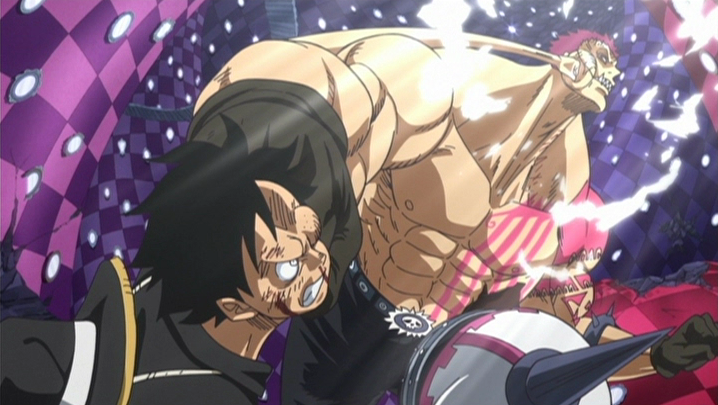

ホールケーキアイランド編
登像
 ナミ達の後を追い、ルフィ達は〝ゾウ〟へとたどり着く。その島は海上を歩き回る巨大な象〝象主（ズニーシャ）〟の背中の上にあり、獣の姿をした〝ミンク族〟が国を作っていた。ミンク族のワンダ、キャロットと出会ったルフィ達は、彼女らに案内され、ナミ達と再会を果たす。だが、そこにはナミ達と行動を共にしていたはずのサンジの姿はなかった。ルフィ達は、ナミからゾウ、そしてサンジの身に何が起きたかを聞かされる。
事の発端は17日前、ゾウに〝四皇〟カイドウの部下、〝旱害のジャック〟が襲来し、ワノ国の侍〝雷ぞう〟を引き渡せと迫る。ミンク族は侍の存在を否定するが、ジャックは聞く耳を持たず、武力に訴える。二人の王、イヌアラシとネコマムシに率いられ、ミンク族は徹底抗戦するも、ジャックが使用した毒ガス兵器によって壊滅してしまう。ジャック達が島を去った後、ゾウを訪れたナミ達はミンク族の惨状を目にし、彼らの救助に奔走。そのおかげでミンク族は一命を取り留め、ナミ達は恩人としてもてなしを受ける事となった。
そして２日前、ビッグ・マム傘下の海賊ベッジが、ナミ達を追ってゾウへとやってくる。ベッジがサンジに差し出したのは、ビッグ・マムが主催するお茶会への招待状。そのお茶会のメインは、なんとサンジとビッグ・マムの娘・プリンの結婚式だった。結婚を決めたのは、サンジの親族である〝ヴィンスモーク家〟。ヴィンスモーク家は強力な軍隊〝ジェルマ66(ダブルシックス)〟を有する海遊国家、ジェルマ王国を治める一族で、サンジはその国王の三男だった。周囲の人々にビッグ・マムの手が及ぶ事を恐れたサンジは、「必ず戻る」と言い残し、一人でビッグ・マムのもとへと向かったのだった。
光月家跡取り・モモの助
 サンジを連れ戻す為、ルフィは単身ビッグ・マムのお茶会に潜り込む事を決意する。翌朝、島中に侍が現れたとの知らせが。現れたのは、遅れて上陸した錦えもん達。〝雷ぞう〟を探しに来たと伝える錦えもんに、イヌアラシとネコマムシは雷ぞうの無事を告げる。ワノ国の光月一族と兄弟分であったミンク族は、国が滅ぼうとも仲間を売る事はしなかったのだ。
その後、モモの助が実は錦えもんの息子ではなく、ワノ国の大名〝光月おでん〟の跡取りである事が明らかに。そしてミンク族が守り続けてきた〝ロード歴史の本文（ポーネグリフ）〟。それは〝偉大なる航路（グランドライン）〟の最終地点である〝ラフテル〟への道しるべだった。〝ロード歴史の本文〟は世界に４つ存在し、それぞれに書かれた地点を地図上で結ぶと、ラフテルの場所が浮かび上がる。そして４つのうち、２つはそれぞれ〝四皇〟カイドウとビッグ・マムの手にあった。
下像
 さらに驚くべき事実がもう1つ。モモの助の父・光月おでんは、かつて海賊王ロジャーと共に、ラフテルに到達していたのだ。だがそのおでんは、ワノ国の〝将軍〟とカイドウによって処刑されていた。錦えもん達の目的、それは将軍を討ち、おでんの遺志を継いでワノ国を〝開国〟させる事だった。「力を貸してほしい」というモモの助の頼みを受け、ルフィは錦えもん達、そしてミンク族と同盟を結成。打倒カイドウを目指す。
だがそこへジャック達が再び襲来し、象主に攻撃を仕掛ける。混乱の中、ルフィとモモの助は象主の声を聞く。「戦えと命じてくれ」と頼む象主にモモの助が応えると、象主は巨大な鼻の一振りでジャックの艦隊を撃破する。
その後、一行は四手に分かれる事に。ルフィ、ナミ、チョッパー、ブルックはミンク族の戦士ペドロと共にお茶会が開かれるホールケーキアイランドへ。ゾロとロー、そして錦えもん達は一足先にワノ国へ。ネコマムシは元白ひげ海賊団１番隊隊長であるマルコの捜索に。モモの助はイヌアラシと共にしばしゾウに残る事となった。ルフィは皆とワノ国での再会を誓い、ホールケーキアイランドへと旅立った。
トットランド
 仲間のもとを離れたサンジは、〝四皇〟ビッグ・マムの本拠地である万国(トットランド)を訪れる。全ては海遊国家ジェルマの国王にしてサンジの父親であるジャッジが、サンジとビッグ・マムの娘の政略結婚を計画した事による。
だがサンジはこれを断固拒否。父に〝欠陥品〟の烙印を押され、幼くして家を捨てたサンジにとって、父ジャッジ、そしてイチジをはじめとする兄弟達はもはや〝家族〟ではなかった。しかし恩人であるゼフを人質に取られ、逃げる事が出来なくなってしまう。
ルフィはサンジ奪還の為、ナミ、チョッパー、ブルック、ペドロ、そしてこっそり付いて来たキャロットと共に、ビッグ・マムのお茶会が開かれるホールケーキアイランドへと向かう。
ルフィvsサンジ
 立ち寄ったショコラタウンで、サンジの結婚相手であるシャーロット・プリンと出会った一行は、彼女の手引きで無事ホールケーキアイランドへ到着。ブルックとペドロは別動隊としてビッグ・マムの城へ潜入、残る４人は海岸でプリンがサンジを連れてくるのを待つ事に。だがうっかり誘惑の森に足を踏み入れてしまい、そこでビッグ・マムの家族であるシャーロット家の襲撃を受ける。
チョッパーとキャロットは、シャーロット家8女ブリュレの能力で、鏡の中の世界〝鏡世界（ミロワールド）〟に囚われてしまう。一方、ルフィは〝将星〟の一人クラッカーを破り、ナミと共にサンジに追いつく。しかしサンジは仲間を守る為に本心を言い出せず、ルフィと決別する。
ルフィはそれでもサンジを待つと啖呵を切るが、シャーロット家の大群に包囲され、ナミ共々囚われの身に。サンジは仲間を逃がしてもらう事を条件に、プリンとの結婚を承諾し、プロポーズする。だがその後、プリンの本性を覗き見てしまったサンジは、結婚式の場でビッグ・マムがヴィンスモーク家を皆殺しにしようと画策している事を知る。
四皇暗殺作戦
 ジンベエに助けられ、自由の身となったルフィとナミ。ルフィはサンジに会う為、約束の場所へ向かう。サンジから「サニー号に帰りたい」と本心を引き出したルフィは、〝家族〟を救いたいというサンジの為に結婚式をブッ壊す事を決意する。一方、ナミとジンベエは、鏡世界の中でチョッパー達と合流。ビッグ・マムに捕まっていたブルックを無事救出する。一度は捕まったブルックであったが、目的の〝ロード歴史の本文（ポーネグリフ）〟の写しはしっかり手に入れていた。
ジンベエの提案により、一行は〝最悪の世代〟の一人、カポネ・ベッジと一時的に手を組む事に。ベッジはビッグ・マムの傘下にありながら、密かにビッグ・マムの暗殺を計画していた。ベッジの監視下にあったシーザーも加わり、ここに麦わらの一味とベッジ率いるファイアタンク海賊団による連合軍が結成された。
作戦失敗
 そしていよいよ、お茶会が開催。誓いのキスに乗じて、サンジを殺そうとするプリン。だがサンジにずっと嫌ってきた〝第３の目〟を「美しい」と言われ、動揺してしまう。会場が混乱に包まれる中、巨大ウェディングケーキからルフィが飛び出し、〝ビッグ・マム暗殺作戦〟がついに始動。
ヴィンスモーク家の命は助けられたたものの、シャーロット家次男で子供達の中でも最強と名高いカタクリらの妨害を受け、ビッグ・マムの暗殺に失敗してしまう。シャーロット家に包囲され窮地に陥った一行は、ベッジの〝シロシロの実〟の能力〝大頭目（ビッグ・ファーザー）〟に一時避難し、逃走を図る。
とその時、かつて魚人島でルフィが譲り受け、そのままビッグ・マムにあげてしまった玉手箱が大爆発。ルフィ達は脱出できたが、ウェディングケーキが壊され、食べ損ねた事を思い出したビッグ・マムが〝食いわずらい〟を起こしてしまう。
月の獅子
 〝食いわずらい〟を発症したビッグ・マムの怒りは麦わらの一味へ向き、ルフィ達は再び窮地に。結婚式でサンジに心惹かれたプリンは、サンジと共に〝究極のケーキ〟を作って、ビッグ・マムの怒りを鎮めようと動き出す。その為に、姉でありベッジの妻であるシフォンに協力を仰ぐ。
ルフィ達はケーキ完成までの時間稼ぎを請け負うも、シャーロット家の猛攻により防戦一方に。もはやこれまでかと思われたその時、ペドロが長男ペロスペローを道連れに自爆。ルフィ達は彼の犠牲によって全滅を免れた。
さらなる追っ手が迫る中、ルフィはカタクリを鏡世界に引きずり込み、1対1の勝負を挑む。一方、サニー号は、満月によってミンク族の真の姿〝月の獅子（スーロン）〟となったキャロットが大活躍を見せ、何とか窮地を脱出。
そしてついにサンジ達のケーキが完成。ベッジの船で運ばれてきたケーキを食べたビッグ・マムはその味に大満足し、〝食いわずらい〟は無事治まった。
海賊ルフィvs将星カタクリ
 鏡世界ではルフィとカタクリの死闘が続いていた。カタクリの未来を見通す〝見聞色の覇気〟によって、攻撃をことごとくかわされるルフィ。だが戦いの中で、ルフィも〝見聞色〟の使い方に目覚め、対するカタクリもルフィを〝対等な敵〟として認め始める。互いに死力を尽くし、激闘する二人。そして〝ギア４(フォース)「スネイクマン」〟の一撃がついにカタクリをとらえ、戦いはルフィの勝利に終わった。
カタクリを打ち破ったルフィは、待ち合わせ地点のカカオ島でサンジと合流。そこには敵の大群が待ち構えていたが、ヴィンスモーク家の助けにより無事脱出し、サニー号に帰還する。さらにシャーロット家の艦隊に猛追されるも、ジンベエの仲間である〝タイヨウの海賊団〟が援軍に到着。サニー号を逃がす為、この場に残るというジンベエに対し、ルフィは「ワノ国で待つ」と約束し、万国を後にする。そして晴れて一味に戻ったサンジは、サニー号のキッチンで再び腕を振るうのだった。